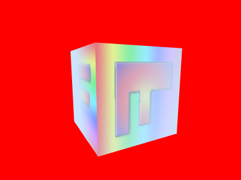
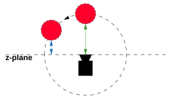
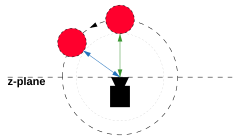

Cet article fait partie d’une série d’articles sur WebGL. Le premier article commence par les bases.
Le brouillard dans WebGL m’intéresse en raison du côté artificiel que cela semble être quand je réfléchis à son fonctionnement. En gros, ce qu’on fait c’est utiliser une sorte de calcul de profondeur ou de distance depuis la caméra dans les shaders pour rendre la couleur plus ou moins identique à la couleur du brouillard.
En d’autres termes, on commence avec une équation de base comme celle-ci
outColor = mix(originalColor, fogColor, fogAmount);
Où fogAmount est une valeur de 0 à 1. La fonction mix mélange les 2 premières valeurs. Quand fogAmount est 0, mix retourne originalColor. Quand fogAmount est 1, mix retourne fogColor. Entre 0 et 1, on obtient un pourcentage des deux couleurs. On pourrait implémenter mix soi-même comme ça
outColor = originalColor + (fogColor - originalColor) * fogAmount;
Créons un shader qui fait ça. Nous utiliserons un cube texturé de l’article sur les textures.
Ajoutons le mélange au fragment shader
#version 300 es
precision highp float;
// Passé depuis le vertex shader.
in vec2 v_texcoord;
// La texture.
uniform sampler2D u_texture;
+uniform vec4 u_fogColor;
+uniform float u_fogAmount;
out vec4 outColor;
void main() {
+ vec4 color = texture(u_texture, v_texcoord);
+ outColor = mix(color, u_fogColor, u_fogAmount);
}
Ensuite, à l’initialisation, nous devons rechercher les emplacements des nouveaux uniforms
var fogColorLocation = gl.getUniformLocation(program, "u_fogColor");
var fogAmountLocation = gl.getUniformLocation(program, "u_fogAmount");
et au moment du rendu les définir
var fogColor = [0.8, 0.9, 1, 1];
var settings = {
fogAmount: .5,
};
...
function drawScene(time) {
...
// Effacer le canvas ET le depth buffer.
// Effacer avec la couleur du brouillard
gl.clearColor(...fogColor);
gl.clear(gl.COLOR_BUFFER_BIT | gl.DEPTH_BUFFER_BIT);
...
// définir la couleur du brouillard et sa quantité
gl.uniform4fv(fogColorLocation, fogColor);
gl.uniform1f(fogAmountLocation, settings.fogAmount);
...
}
Et ici vous verrez que si vous déplacez le curseur, vous pouvez changer entre la texture et la couleur du brouillard
Maintenant, tout ce qu’on a vraiment besoin de faire est, au lieu de passer la quantité de brouillard, de la calculer en fonction de quelque chose comme la profondeur depuis la caméra.
Rappelons-nous de l’article sur les caméras qu’après avoir appliqué la matrice de vue, toutes les positions sont relatives à la caméra. La caméra regarde dans la direction -z, donc si on regarde juste la position z après avoir multiplié par les matrices world et view, on aura une valeur qui représente à quelle distance quelque chose se trouve du plan z de la caméra.
Modifions le vertex shader pour passer ces données au fragment shader afin de pouvoir l’utiliser pour calculer une quantité de brouillard. Pour ce faire, divisons u_matrix en 2 parties : une matrice de projection et une matrice worldView.
#version 300 es
in vec4 a_position;
in vec2 a_texcoord;
-uniform mat4 u_matrix;
+uniform mat4 u_worldView;
+uniform mat4 u_projection;
out vec2 v_texcoord;
+out float v_fogDepth;
void main() {
// Multiplier la position par la matrice.
- gl_Position = u_matrix * a_position;
+ gl_Position = u_projection * u_worldView * a_position;
// Passer les texcoords au fragment shader.
v_texcoord = a_texcoord;
+ // Passer juste la position z négative relative à la caméra.
+ // la caméra regarde dans la direction -z donc normalement les choses
+ // devant la caméra ont une position Z négative
+ // mais en la négativant on obtient une profondeur positive.
+ v_fogDepth = -(u_worldView * a_position).z;
}
Maintenant dans le fragment shader, nous voulons que si la profondeur est inférieure à une certaine valeur, ne pas mélanger de brouillard (fogAmount = 0). Si la profondeur est supérieure à une certaine valeur, alors 100% de brouillard (fogAmount = 1). Entre ces 2 valeurs, mélanger les couleurs.
On pourrait écrire du code pour faire ça, mais GLSL a une fonction, smoothstep, qui fait exactement ça. On lui donne la valeur min, la valeur max et la valeur à tester. Si la valeur de test est inférieure ou égale à la valeur min, elle retourne 0. Si la valeur de test est supérieure ou égale à la valeur max, elle retourne 1. Si le test est entre ces 2 valeurs, elle retourne quelque chose entre 0 et 1 proportionnellement à l’endroit où la valeur de test se trouve entre min et max.
Donc, il devrait être assez simple d’utiliser ça dans notre fragment shader pour calculer une quantité de brouillard
#version 300 es
precision highp float;
// Passé depuis le vertex shader.
in vec2 v_texcoord;
in float v_fogDepth;
// La texture.
uniform sampler2D u_texture;
uniform vec4 u_fogColor;
-uniform float u_fogAmount;
+uniform float u_fogNear;
+uniform float u_fogFar;
out vec4 outColor;
void main() {
vec4 color = texture(u_texture, v_texcoord);
+ float fogAmount = smoothstep(u_fogNear, u_fogFar, v_fogDepth);
- outColor = mix(color, u_fogColor, u_fogAmount);
+ outColor = mix(color, u_fogColor, fogAmount);
}
et bien sûr nous devons rechercher tous ces uniforms à l’initialisation
// rechercher les uniforms
+var projectionLocation = gl.getUniformLocation(program, "u_projection");
+var worldViewLocation = gl.getUniformLocation(program, "u_worldView");
var textureLocation = gl.getUniformLocation(program, "u_texture");
var fogColorLocation = gl.getUniformLocation(program, "u_fogColor");
+var fogNearLocation = gl.getUniformLocation(program, "u_fogNear");
+var fogFarLocation = gl.getUniformLocation(program, "u_fogFar");
et les définir au moment du rendu
var fogColor = [0.8, 0.9, 1, 1];
var settings = {
- fogAmount: .5,
+ fogNear: 1.1,
+ fogFar: 2.0,
};
// Dessiner la scène.
function drawScene(time) {
...
// Calculer la matrice de projection
var aspect = gl.canvas.clientWidth / gl.canvas.clientHeight;
var projectionMatrix =
m4.perspective(fieldOfViewRadians, aspect, 1, 2000);
var cameraPosition = [0, 0, 2];
var up = [0, 1, 0];
var target = [0, 0, 0];
// Calculer la matrice de la caméra avec lookAt.
var cameraMatrix = m4.lookAt(cameraPosition, target, up);
// Créer une matrice de vue depuis la matrice de caméra.
var viewMatrix = m4.inverse(cameraMatrix);
- var viewProjectionMatrix = m4.multiply(projectionMatrix, viewMatrix);
-
- var matrix = m4.xRotate(viewProjectionMatrix, modelXRotationRadians);
- matrix = m4.yRotate(matrix, modelYRotationRadians);
+ var worldViewMatrix = m4.xRotate(viewMatrix, modelXRotationRadians);
+ worldViewMatrix = m4.yRotate(worldViewMatrix, modelYRotationRadians);
// Définir les matrices.
- gl.uniformMatrix4fv(matrixLocation, false, matrix);
+ gl.uniformMatrix4fv(projectionLocation, false, projectionMatrix);
+ gl.uniformMatrix4fv(worldViewLocation, false, worldViewMatrix);
// Indiquer au shader d'utiliser l'unité de texture 0 pour u_texture
gl.uniform1i(textureLocation, 0);
// définir la couleur du brouillard et les paramètres near, far
gl.uniform4fv(fogColorLocation, fogColor);
+ gl.uniform1f(fogNearLocation, settings.fogNear);
+ gl.uniform1f(fogFarLocation, settings.fogFar);
- gl.uniform1f(fogAmountLocation, settings.fogAmount);
Pendant qu’on y est, dessinons 40 cubes dans la distance pour rendre le brouillard plus visible.
var settings = {
fogNear: 1.1,
fogFar: 2.0,
+ xOff: 1.1,
+ zOff: 1.4,
};
...
const numCubes = 40;
for (let i = 0; i <= numCubes; ++i) {
var worldViewMatrix = m4.translate(viewMatrix, -2 + i * settings.xOff, 0, -i * settings.zOff);
worldViewMatrix = m4.xRotate(worldViewMatrix, modelXRotationRadians + i * 0.1);
worldViewMatrix = m4.yRotate(worldViewMatrix, modelYRotationRadians + i * 0.1);
gl.uniformMatrix4fv(worldViewLocation, false, worldViewMatrix);
// Dessiner la géométrie.
gl.drawArrays(gl.TRIANGLES, 0, 6 * 6);
}
Et maintenant nous obtenons un brouillard basé sur la profondeur
Note : Nous n’avons pas ajouté de code pour s’assurer que fogNear est inférieur ou égal à fogFar, ce qui sont des paramètres en quelque sorte invalides, donc assurez-vous de les définir tous les deux de manière appropriée.
Comme je l’ai mentionné ci-dessus, cela ressemble à un tour de passe-passe. Ça fonctionne parce que la couleur du brouillard vers laquelle on s’estompe correspond à la couleur de fond. Changez la couleur de fond et l’illusion disparaît.
-gl.clearColor(...fogColor);
+gl.clearColor(1, 0, 0, 1); // rouge
nous donne

donc n’oubliez pas que vous devez définir la couleur de fond pour qu’elle corresponde à la couleur du brouillard.
Utiliser la profondeur fonctionne et c’est peu coûteux, mais il y a un problème. Supposons que vous ayez un cercle d’objets autour de la caméra. Nous calculons une quantité de brouillard basée sur la distance depuis le plan z de la caméra. Cela signifie que lorsque vous tournez la caméra, les objets sembleront entrer et sortir légèrement du brouillard car leur valeur Z dans l’espace de vue se rapproche de 0

Vous pouvez voir le problème dans cet exemple
Ci-dessus, il y a un anneau de 8 cubes directement autour de la caméra. La caméra tourne sur place. Cela signifie que les cubes sont toujours à la même distance de la caméra mais à une distance différente du plan Z, donc notre calcul de quantité de brouillard fait que les cubes près des bords sortent du brouillard.
La solution est de calculer à la place la distance depuis la caméra, qui sera la même pour tous les cubes

Pour ce faire, nous avons juste besoin de passer la position du sommet dans l’espace de vue depuis le vertex shader au fragment shader
#version 300 es
in vec4 a_position;
in vec2 a_texcoord;
uniform mat4 u_worldView;
uniform mat4 u_projection;
out vec2 v_texcoord;
-out float v_fogDepth;
+out vec3 v_position;
void main() {
// Multiplier la position par la matrice.
gl_Position = u_projection * u_worldView * a_position;
// Passer les texcoords au fragment shader.
v_texcoord = a_texcoord;
- // Passer juste la position z négative relative à la caméra.
- // la caméra regarde dans la direction -z donc normalement les choses
- // devant la caméra ont une position Z négative
- // mais en la négativant on obtient une profondeur positive.
- v_fogDepth = -(u_worldView * a_position).z;
+ // Passer la position de vue au fragment shader
+ v_position = (u_worldView * a_position).xyz;
}
et ensuite dans le fragment shader nous pouvons utiliser la position pour calculer la distance
#version 300 es
precision highp float;
// Passé depuis le vertex shader.
in vec2 v_texcoord;
-in float v_fogDepth;
+in vec3 v_position;
// La texture.
uniform sampler2D u_texture;
uniform vec4 u_fogColor;
uniform float u_fogNear;
uniform float u_fogFar;
out vec4 outColor;
void main() {
vec4 color = texture(u_texture, v_texcoord);
- float fogAmount = smoothstep(u_fogNear, u_fogFar, v_fogDepth);
+ float fogDistance = length(v_position);
+ float fogAmount = smoothstep(u_fogNear, u_fogFar, fogDistance);
outColor = mix(color, u_fogColor, fogAmount);
}
Et maintenant les cubes ne sortent plus du brouillard lorsque la caméra tourne
Jusqu’ici, tout notre brouillard a utilisé un calcul linéaire. En d’autres termes, la couleur du brouillard est appliquée linéairement entre near et far. Comme beaucoup de choses dans la vraie vie, le brouillard fonctionne apparemment de manière exponentielle. Il s’épaissit avec le carré de la distance depuis l’observateur. Une équation courante pour le brouillard exponentiel est
#define LOG2 1.442695
fogAmount = 1. - exp2(-fogDensity * fogDensity * fogDistance * fogDistance * LOG2));
fogAmount = clamp(fogAmount, 0., 1.);
Pour utiliser ça, nous modifierions le fragment shader en quelque chose comme
#version 300 es
precision highp float;
// Passé depuis le vertex shader.
in vec2 v_texcoord;
in vec3 v_position;
// La texture.
uniform sampler2D u_texture;
uniform vec4 u_fogColor;
-uniform float u_fogNear;
-uniform float u_fogFar;
+uniform float u_fogDensity;
out vec4 outColor;
void main() {
vec4 color = texture(u_texture, v_texcoord);
#define LOG2 1.442695
float fogDistance = length(v_position);
- float fogAmount = smoothstep(u_fogNear, u_fogFar, fogDistance);
+ float fogAmount = 1. - exp2(-u_fogDensity * u_fogDensity * fogDistance * fogDistance * LOG2);
fogAmount = clamp(fogAmount, 0., 1.);
outColor = mix(color, u_fogColor, fogAmount);
}
Et nous obtenons un brouillard basé sur la distance exp2 et la densité
Une chose à noter avec le brouillard basé sur la densité est qu’il n’y a pas de paramètres near et far. Cela pourrait être plus réaliste, mais cela pourrait aussi ne pas correspondre à vos besoins esthétiques. Lequel vous préférez est une décision artistique.
Il existe de nombreuses autres façons de calculer le brouillard. Sur un GPU peu puissant, vous pourriez simplement utiliser gl_FragCoord.z. gl_FragCoord est une variable globale que WebGL définit. Les composantes x et y sont les coordonnées du pixel dessiné. La coordonnée z est la profondeur de ce pixel de 0 à 1. Bien que pas directement traduisible en distance, vous pouvez quand même obtenir quelque chose qui ressemble à du brouillard en choisissant des valeurs entre 0 et 1 pour near et far. Rien n’a besoin d’être passé du vertex shader au fragment shader et aucun calcul de distance n’est nécessaire, c’est donc une façon de créer un effet de brouillard peu coûteux sur un GPU peu puissant.